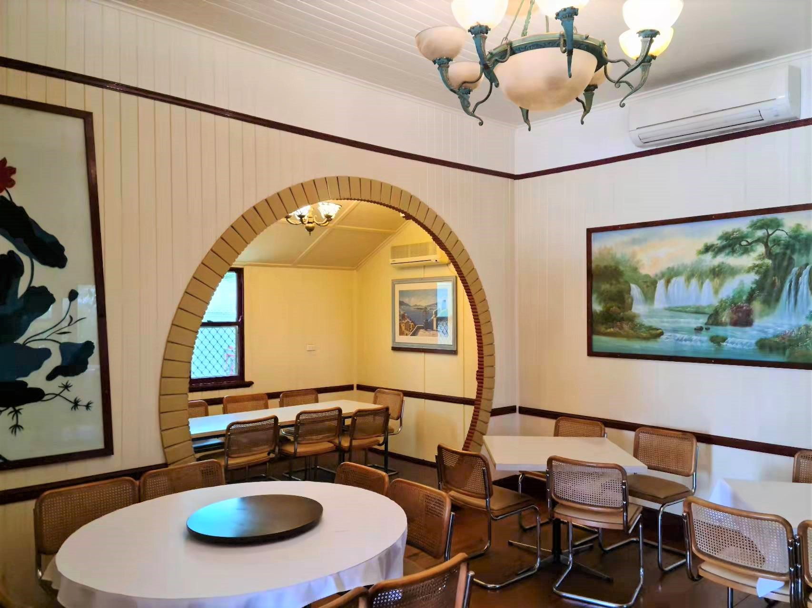
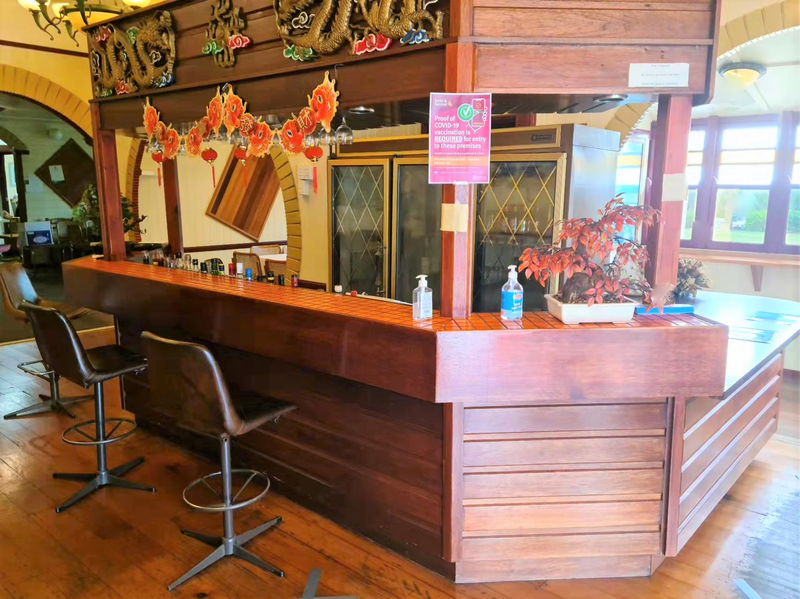

The West Lake Chinese Seafood Restaurant is a fully licensed
restaurant that deliver authentic food made by genuine people. We are
the oldest Chinese restaurant in Toowoomba with over 40 years of
history. Our menu have over 100 dishes and there's certainly something
just right for you!
Our mission is to always deliver fresh and high-quality products at a
great value - come eat with us!
The West Lake Chinese Seafood Restaurant serves quality food to our
valuable customers in a due time. We have a wide variety of menu items
so that there's sure to be something for you to enjoy. We have a great
environment of great ambience, it is a place where you can meet, relax
and have great time.
